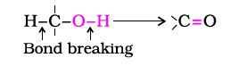

Alcohols are prepared by the following methods:
1. From alkenes
(i) By acid catalysed hydration: Alkenes react with water in the presence of acid as catalyst to form alcohols. In case of unsymmetrical alkenes, the addition reaction takes place in accordance with Markovnikov's rule (Unit 13, Class XI).
Mechanism
The mechanism of the reaction involves the following three steps:Hydroboration - oxidation was first reported by H.C. Brown in 1959. For his studies on boron containing organic compounds, Brown shared the 1979 Nobel prize in Chemistry with G. Wittig.
(ii) By hydroboration–oxidation: Diborane (BH3)2 reacts with alkenes to give trialkyl boranes as addition product. This is oxidised to alcohol by hydrogen peroxide in the presence of aqueous sodium hydroxide.
The addition of borane to the double bond takes place in such a manner that the boron atom gets attached to the sp2 carbon carrying greater number of hydrogen atoms. The alcohol so formed looks as if it has been formed by the addition of water to the alkene in a way opposite to the Markovnikov's rule. In this reaction,alcohol is obtained in excellent yield.
2. From carbonyl compounds
(i) By reduction of aldehydes and ketones: Aldehydes and ketones are reduced to the corresponding alcohols by addition of hydrogen in the presence of catalysts (catalytic hydrogenation). The usual catalyst is a finely divided metal such as platinum, palladium or nickel. It is also prepared by treating aldehydes and ketones with sodium borohydride (NaBH4) or lithium aluminium hydride (LiAlH4). Aldehydes yield primary alcohols whereas ketones give secondary alcohols.The numbers in front of the reagents along the arrow indicate that the second reagent is added only when the reaction with first is complete.
(ii) By reduction of carboxylic acids and esters: Carboxylic acids are reduced to primary alcohols in excellent yields by lithium aluminium hydride, a strong reducing agent.
However, LiAlH4 is an expensive reagent, and therefore, used for preparing special chemicals only. Commercially, acids are reduced to alcohols by converting them to the esters (Section 11.4.4), followed by their reduction using hydrogen in the presence of catalyst (catalytic hydrogenation).
3. From Grignard reagents
Alcohols are produced by the reaction of Grignard reagents (Unit 10, Class XII) with aldehydes and ketones. The first step of the reaction is the nucleophilic addition of Grignard reagent to the carbonyl group to form an adduct. Hydrolysis of the adduct yields an alcohol.The reaction of Grignard reagents with methanal produces a primary alcohol, with other aldehydes, secondary alcohols and with ketones, tertiary alcohols.
The overall reactions using different aldehydes and ketones are as follows:
you will notice that reaction produce a primary alcohol with methanal, a secondary alcohol with other aldehydes and tretiary alcohol with ketones.
Example 11.2
Give the structures and IUPAC names of the products expected from the following reactions:
(a) Catalytic reduction of butanal.
(b) Hydration of propene in the presence of dilute sulphuric acid.
(c) Reaction of propanone with methylmagnesium bromide followed by hydrolysis.
Solution
Phenol, also known as carbolic acid, was first isolated in the early nineteenth century from coal tar. Nowadays, phenol is commercially produced synthetically. In the laboratory, phenols are prepared from benzene derivatives by any of the following methods:
1. From haloarenes
Chlorobenzene is fused with NaOH at 623K and 320 atmospheric pressure. Phenol is obtained by acidification of sodium phenoxide so produced (Unit 10, Class XII).2. From benzenesulphonic acid
Benzene is sulphonated with oleum and benzene sulphonic acid so formed is converted to sodium phenoxide on heating with molten sodium hydroxide. Acidification of the sodium salt gives phenol.3. From diazonium salts
A diazonium salt is formed by treating an aromatic primary amine with nitrous acid (NaNO2 + HCl) at 273-278 K. Diazonium salts are hydrolysed to phenols by warming with water or by treating with dilute acids (Unit 13, Class XII).Most of the worldwide production of phenol is from cumene.
4. From cumene
Phenol is manufactured from the hydrocarbon, cumene. Cumene (isopropylbenzene) is oxidised in the presence of air to cumene hydroperoxide. It is converted to phenol and acetone by treating it with dilute acid. Acetone, a by-product of this reaction, is also obtained in large quantities by this method.
Alcohols and phenols consist of two parts, an alkyl/aryl group and a hydroxyl group. The properties of alcohols and phenols are chiefly due to the hydroxyl group. The nature of alkyl and aryl groups simply modify these properties.
Boiling Points
The –OH group in alcohols and phenols is involved in intermolecular hydrogen bonding as shown below:
It is interesting to note that boiling points of alcohols and phenols are higher in comparison to other classes of compounds, namely hydrocarbons, ethers, haloalkanes and haloarenes of comparable molecular masses. For example, ethanol and propane have comparable molecular masses but their boiling points differ widely. The boiling point of methoxymethane is intermediate of the two boiling points.
The high boiling points of alcohols are mainly due to the presence of intermolecular hydrogen bonding in them which is lacking in ethers and hydrocarbons.
Solubility
Example 11.3
Arrange the following sets of compounds in order of their increasing boiling points:
(a) Pentan-1-ol, butan-1-ol, butan-2-ol, ethanol, propan-1-ol, methanol.
(b) Pentan-1-ol, n-butane, pentanal, ethoxyethane.
Solution
(a) Methanol, ethanol, propan-1-ol, butan-2-ol, butan-1-ol, pentan-1-ol.
(b) n-Butane, ethoxyethane, pentanal and pentan-1-ol.
Alcohols are versatile compounds. They react both as nucleophiles and electrophiles. The bond between O–H is broken when alcohols react as nucleophiles.
Based on the cleavage of O–H and C–O bonds, the reactions of alcohols and phenols may be divided into two groups:
(a) Reactions involving cleavage of O–H bond
1. Acidity of alcohols and phenols
In addition to this, phenols react with aqueous sodium hydroxide to form sodium phenoxides.
In addition to this, phenols react with aqueous sodium hydroxide to form sodium phenoxides.
The above reactions show that alcohols and phenols are acidic in nature. In fact, alcohols and phenols are Brönsted acids i.e., they can donate a proton to a stronger base (B:).
(ii) Acidity of alcohols: The acidic character of alcohols is due to the polar nature of O–H bond. An electron-releasing group (–CH3, –C2H5) increases electron density on oxygen tending to decrease the polarity of O-H bond. This decreases the acid strength. For this reason, the acid strength of alcohols decreases in the following order:
Alcohols are, however, weaker acids than water. This can be illustrated by the reaction of water with an alkoxide.
This reaction shows that water is a better proton donor (i.e., stronger acid) than alcohol. Also, in the above reaction, we note that an alkoxide ion is a better proton acceptor than hydroxide ion, which suggests that alkoxides are stronger bases (sodium ethoxide is a stronger base than sodium hydroxide).
Alcohols act as Bronsted bases as well. It is due to the presence of unshared electron pairs on oxygen, which makes them proton acceptors.
(iii) Acidity of phenols: The reactions of phenol with metals (e.g., sodium, aluminium) and sodium hydroxide indicate its acidic nature. The hydroxyl group, in phenol is directly attached to the sp2 hybridised carbon of benzene ring which acts as an electron withdrawing group. Due to this, the charge distribution in phenol molecule, as depicted in its resonance structures, causes the oxygen of –OH group to be positive.The reaction of phenol with aqueous sodium hydroxide indicates that phenols are stronger acids than alcohols and water. Let us examine how a compound in which hydroxyl group attached to an aromatic ring is more acidic than the one in which hydroxyl group is attached to an alkyl group. The ionisation of an alcohol and a phenol takes place as follows:
Due to the higher electronegativity of sp2 hybridised carbon of phenol to which –OH is attached, electron density decreases on oxygen. This increases the polarity of O–H bond and results in an increase in ionisation of phenols than that of alcohols. Now let us examine the stabilities of alkoxide and phenoxide ions. In alkoxide ion, the negative charge is localised on oxygen while in phenoxide ion, the charge is delocalised. The delocalisation of negative charge (structures I-V) makes phenoxide ion more stable and favours the ionisation of phenol. Although there is also charge delocalisation in phenol, its resonance structures have charge separation due to which the phenol molecule is less stable than phenoxide ion.
In substituted phenols, the presence of electron withdrawing groups such as nitro group, enhances the acidic strength of phenol. This effect is more pronounced when such a group is present at ortho and para positions. It is due to the effective delocalisation of negative charge in phenoxide ion. On the other hand, electron releasing groups, such as alkyl groups, in general, do not favour the formation of phenoxide ion resulting in decrease in acid strength. Cresols, for example, are less acidic than phenol.
The greater the pKa value, the weaker the acid.
Table 11.3: pKa Values of some Phenols and Ethanol
From the above data, you will note that phenol is million times more acidic than ethanol.
Example 11.4
Arrange the following compounds in increasing order of their acid strength: Propan-1-ol, 2,4,6-trinitrophenol, 3-nitrophenol, 3,5-dinitrophenol, phenol, 4-methylphenol.
Solution
Propan-1ol, 4-methyphenol, phenol, 3-ntrophenol, 3, 5-dintrophenol, 2, 4, 6-trinitrophenol.
2. Esterification
Alcohols and phenols react with carboxylic acids, acid chlorides and acid anhydrides to form esters.
Aspirin possesses analgesic, antiinflammatory and antipyretic properties.
The reaction with carboxylic acid and acid anhydride is carried out in the presence of a small amount of concentrated sulphuric acid. The reaction is reversible, and therefore, water is removed as soon as it is formed. The reaction with acid chloride is carried out in the presence of a base (pyridine) so as to neutralise HCl which is formed during the reaction. It shifts the equilibrium to the right hand side. The introduction of acetyl (CH3CO) group in alcohols or phenols is known as acetylation. Acetylation of salicylic acid produces aspirin.(b) Reactions involving cleavage of carbon – oxygen (C–O) bond in alcohols
The reactions involving cleavage of C–O bond take place only in alcohols. Phenols show this type of reaction only with zinc.1. Reaction with hydrogen halides: Alcohols react with hydrogen halides to form alkyl halides (Refer Unit 10, Class XII).
The difference in reactivity of three classes of alcohols with HCl distinguishes them from one another (Lucas test). Alcohols are soluble in Lucas reagent (conc. HCl and ZnCl2) while their halides are immiscible and produce turbidity in solution. In case of tertiary alcohols, turbidity is produced immediately as they form the halides easily. Primary alcohols do not produce turbidity at room temperature.
2. Reaction with phosphorus trihalides: Alcohols are converted to alkyl bromides by reaction with phosphorus tribromide (Refer Unit 10, Class XII). 3. Dehydration: Alcohols undergo dehydration (removal of a molecule of water) to form alkenes on treating with a protic acid e.g., concentrated H2SO4 or H3PO4, or catalysts such as anhydrous zinc chloride or alumina (Unit 13, Class XI).Ethanol undergoes dehydration by heating it with concentrated H2SO4 at 443 K.
Secondary and tertiary alcohols are dehydrated under milder conditions. For example
Thus, the relative ease of dehydration of alcohols follows the following order:
The mechanism of dehydration of ethanol involves the following steps:
Tertiary carbocations are more stable and therefore are easier to form than secondary and primary carbocations; tertiary alcohols are the easiest to dehydrate
Mechanism
Step 1: Formation of protonated alcohol.
Step 2: Formation of carbocation: It is the slowest step and hence, the rate determining step of the reaction.
Step 3: Formation of ethene by elimination of a proton.
The acid used in step 1 is released in step 3. To drive the equilibrium to the right, ethene is removed as it is formed.
4. Oxidation: Oxidation of alcohols involves the formation of a carbonoxygen double bond with cleavage of an O-H and C-H bonds.

Such a cleavage and formation of bonds occur in oxidation reactions. These are also known as dehydrogenation reactions as these involve loss of dihydrogen from an alcohol molecule. Depending on the oxidising agent used, a primary alcohol is oxidised to an aldehyde which in turn is oxidised to a carboxylic acid.
Strong oxidising agents such as acidified potassium permanganate are used for getting carboxylic acids from alcohols directly. CrO3 in anhydrous medium is used as the oxidising agent for the isolation of aldehydes.
A better reagent for oxidation of primary alcohols to aldehydes in good yield is pyridinium chlorochromate (PCC), a complex of chromium trioxide with pyridine and HCl.
Secondary alcohols are oxidised to ketones by chromic anhyride (CrO3).
Tertiary alcohols do not undergo oxidation reaction. Under strong reaction conditions such as strong oxidising agents (KMnO4) and elevated temperatures, cleavage of various C-C bonds takes place and a mixture of carboxylic acids containing lesser number of carbon atoms is formed.
When the vapours of a primary or a secondary alcohol are passed over heated copper at 573 K, dehydrogenation takes place and an aldehyde or a ketone is formed while tertiary alcohols undergo dehydration.
Biological oxidation of methanol and ethanol in the body produces the corresponding aldehyde followed by the acid. At times the alcoholics, by mistake, drink ethanol, mixed with methanol also called denatured alcohol. In the body, methanol is oxidised first to methanal and then to methanoic acid, which may cause blindness and death. A methanol poisoned patient is treated by giving intravenous infusions of diluted ethanol. The enzyme responsible for oxidation of aldehyde (HCHO) to acid is swamped allowing time for kidneys to excrete methanol.(c) Reactions of phenols
Following reactions are shown by phenols only.
1. Electrophilic aromatic substitution
In phenols, the reactions that take place on the aromatic ring are electrophilic ubstitution reactions (Unit 13, Class XI). The –OH group attached to the benzene ring activates it towards electrophilic substitution. Also, it directs the incoming group to ortho and para positions in the ring as these positions become electron rich due to the resonance effect caused by –OH group. The resonance structures are shown under acidity of phenols.Common electrophilic aromatic substitution reactions taking place in phenol are as follows:
(i) Nitration: With dilute nitric acid at low temperature (298 K), phenol yields a mixture of ortho and para nitrophenols.
The ortho and para isomers can be separated by steam distillation. o-Nitrophenol is steam volatile due to intramolecular hydrogen bonding while p-nitrophenol is less volatile due to intermolecular hydrogen bonding which causes the association of molecules.
2, 4, 6 - Trinitrophenol is a strong acid due to the presence of three electron withdrawing –NO2 groups which facilitate the release of hydrogen ion.
With concentrated nitric acid, phenol is converted to 2,4,6-trinitrophenol. The product is commonly known as picric acid. The yield of the reaction product is poor.
Nowadays picric acid is prepared by treating phenol first with concentrated sulphuric acid which converts it to phenol-2,4-disulphonic acid, and then with concentrated nitric acid to get 2,4,6-trinitrophenol. Can you write the equations of the reactions involved?
(ii) Halogenation: On treating phenol with bromine, different reaction products are formed under different experimental conditions.
(a) When the reaction is carried out in solvents of low polarity such as CHCl3 or CS2 and at low temperature, monobromophenols are formed.
The usual halogenation of benzene takes place in the presence of a Lewis acid, such as FeBr3 (Unit 10, Class XII), which polarises the halogen molecule. In case of phenol, the polarisation of bromine molecule takes place even in the absence of Lewis acid. It is due to the highly activating effect of –OH group attached to the benzene ring.
(b) When phenol is treated with bromine water, 2,4,6-tribromophenol is formed as white precipitate.
Example 11.5
Write the structures of the major products expected from the following reactions:
(a) Mononitration of 3-methylphenol
(b) Dinitration of 3-methylphenol
(c) Mononitration of phenyl methanoate.
Solution
The combined influence of –OH and –CH3 groups determine the position of the incoming group.
2. Kolbe's reaction
Phenoxide ion generated by treating phenol with sodium hydroxide is even more reactive than phenol towards electrophilic aromatic substitution. Hence, it undergoes electrophilic substitution with carbon dioxide, a weak electrophile. Ortho hydroxybenzoic acid is formed as the main reaction product.
3. Reimer-Tiemann reaction
On treating phenol with chloroform in the presence of sodium hydroxide, a –CHO group is introduced at ortho position of benzene ring. This reaction is known as Reimer - Tiemann reaction.
The intermediate substituted benzal chloride is hydrolysed in the presence of alkali to produce salicylaldehyde.
4. Reaction of phenol with zinc dust
Phenol is converted to benzene on heating with zinc dust.
5. Oxidation
Oxidation of phenol with chromic acid produces a conjugated diketone known as benzoquinone. In the presence of air, phenols are slowly oxidised to dark coloured mixtures containing quinones.